- vpnux Client は，OpenVPN 経由で対象環境へ接続するための Windows 向けクライアントソフトウェア（Plum Systems 製・日本語 GUI）
- 受領した設定ファイル・証明書・共有鍵を読み込み，暗号化トンネルの確立を担う
手順書テンプレート
2026年06月01日
regmonkey_index:
title_fontsize: 1.3em
bullet_fontsize: 0.85em
numbering: true
bullet_position: 0.5em
children:
- title: 接続の全体像
description:
- <strong>全体像</strong>：受領 → 導入 → 設定 → 接続の 4 ステップで対象環境につなぐ
- <strong>通信経路</strong>：TCP/443 の暗号化トンネル＋3 要素認証を俯瞰する
width: [42,58]
- title: 環境情報の受領
description:
- <strong>受領物</strong>：設定ファイル・CA 証明書・TLS-Auth 共有鍵・ユーザ情報
- ID/パスワード・鍵・証明書は秘匿情報として扱う
width: [42,58]
- title: vpnux Client の導入
description:
- <strong>導入</strong>：配布元から取得しウィザードでインストール
- <strong>役割</strong>：OpenVPN 接続を担うクライアントソフトウェア
width: [42,58]
- title: プロファイルの作成
description:
- <strong>一般設定</strong>：接続先・デバイス・プロトコル・認証を入力
- <strong>詳細設定</strong>：TLS-Auth と証明書検証を有効化し保存
width: [42,58]
- title: OpenVPN 接続
description:
- <strong>接続</strong>：作成したプロファイルを選び接続を実行
- <strong>確認</strong>：タスクトレイの通知で接続の成否を確認
width: [42,58]接続の全体像
環境情報の受領
vpnux Client の導入
プロファイルの作成
OpenVPN 接続
環境情報の受領 → クライアント導入 → プロファイル作成 → 接続の順で進める
step-flow__row_height: 4.5em
col_width: [22, 38, 40]
header_font: 1.4em
top-aligned: true
line_height: 1.1
header:
step: ステップ
description: 行うこと
example: ポイント
font:
step: 1.6em
description: 1.4em
example: 1.4em
record:
- step: ① 環境情報の受領
description:
- 申請後に届く接続情報一式を確認
example:
- 設定ファイル・CA 証明書
- TLS-Auth 共有鍵・ユーザ情報
- step: ② クライアント導入
description:
- vpnux Client をウィザードでインストール
example:
- OpenVPN 接続を担うクライアントソフトウェア
- step: ③ プロファイル作成
description:
- 一般設定・詳細設定を手順どおりに入力し保存
example:
- 接続先・プロトコル・認証を設定
- TLS-Auth と証明書検証を有効化
- step: ④ 接続
description:
- 作成したプロファイルを選び接続ボタンを押下
example:
- タスクトレイの通知で接続完了を確認TCP/443 のトンネル上で ID/パスワード・CA 証明書・TLS-Auth 共有鍵の 3 要素を照合する
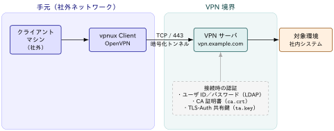
接続の全体像
環境情報の受領
vpnux Client の導入
プロファイルの作成
OpenVPN 接続
LDAP アカウント作成通知：受領後は取り扱い注意を促すこと
OpenVPNの環境設定情報ファイル構成
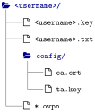
record1:
ファイル・フォルダ: "<code><username>/</code>"
役割: ユーザ毎フォルダ
record2:
ファイル・フォルダ: "<code><username>.key</code>"
役割: ユーザ毎の秘密鍵（本手順では利用しない）
record3:
ファイル・フォルダ: "<code><username>.txt</code>"
役割: VPN ログイン用のユーザ ID・パスワードを記載
record4:
ファイル・フォルダ: "<code>config/</code>"
役割: OpenVPN 設定フォルダ
record5:
ファイル・フォルダ: "<code>config/ca.crt</code>"
役割: 認証用 CA 証明書
record6:
ファイル・フォルダ: "<code>config/ta.key</code>"
役割: TLS-Auth 用共有鍵
record7:
ファイル・フォルダ: "<code>*.ovpn</code>"
役割: OpenVPN 設定ファイル（接続先、ポート、使用する証明書・鍵などを記述）接続の全体像
環境情報の受領
vpnux Client の導入
プロファイルの作成
OpenVPN 接続
regmonkey_index:
title_fontsize: 1.1em
bullet_fontsize: 0.9em
numbering: false
children:
- title: ① GUI だけでプロファイルを管理できる
description:
- 設定ファイルをテキストエディタで直接編集せず，GUI から接続プロファイルを作成・切り替えできる
- 複数の接続先を使い分ける場合もプロファイルを追加するだけでよい
width: [40,60]
- title: ② 無償の Standard Edition を使用する
description:
- 一定の条件で商用利用も可能な無償版：問い合わせサポート・保守サービスは提供されない
- サポートや企業向け機能が必要な場合は有償の Business Edition を利用する
width: [40,60]
- title: ③ インストールはウィザードに従うだけ
description:
- 公式サイト <code>https://www.vpnux.jp/</code> からインストーラを取得し，既定設定のまま導入する
- 管理者権限が必要なのはインストール時のみ：導入後の VPN 接続操作は一般ユーザ権限で行える
width: [40,60]接続の全体像
環境情報の受領
vpnux Client の導入
プロファイルの作成
OpenVPN 接続
起動画面 → 「プロファイル」→「追加」の 2 クリックで編集画面が開く
① 起動画面で「プロファイル」を押下
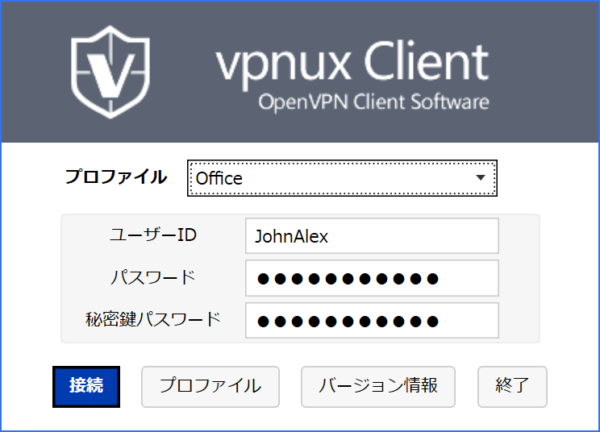
② 一覧画面で「追加」を押下
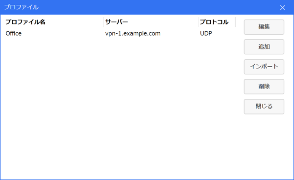
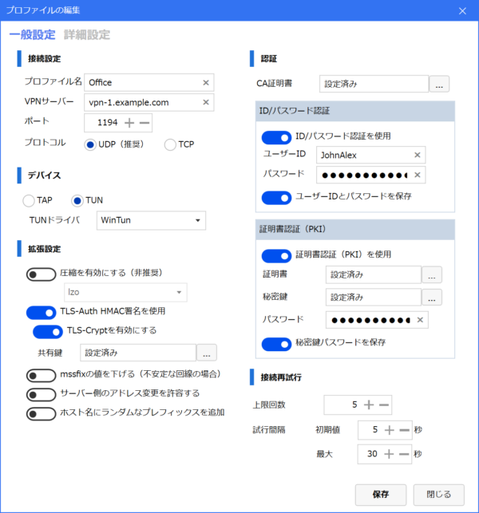
「一般設定」タブの画面例（値はサンプル）
record1:
項目: プロファイル名
設定値: 任意文字列（例：<code>MY_VPN</code>）
record2:
項目: VPN サーバ
設定値: <code>vpn.example.com</code> を入力
record3:
項目: ポート
設定値: <code>443</code> を入力
record4:
項目: デバイス
設定値: <code>TUN</code> を選択 (仮想ネットワークインターフェースの種類)
record5:
項目: プロトコル
設定値: <code>TCP</code> を選択
record6:
項目: 拡張設定
設定値: 「LZO 圧縮を有効にする」「サーバ側のアドレス変更を許容する」をチェック
record7:
項目: CA 証明書
設定値: <code>config/ca.crt</code> から読み込み保存
record8:
項目: 認証
設定値: 「ID/パスワード認証を使用」をチェック
record9:
項目: ID・パスワード
設定値: "<code><username>.txt</code> の ID・パスワードを入力し「保存」をチェック"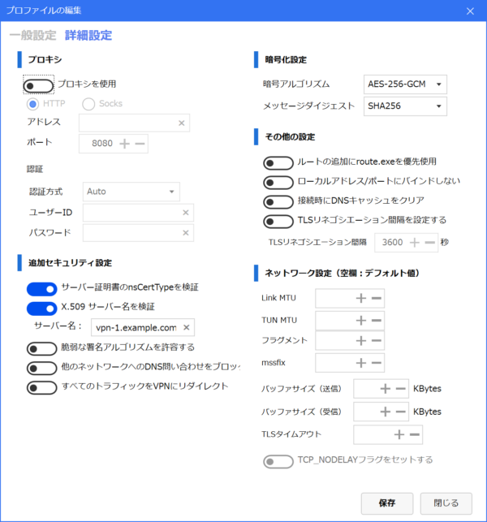
「詳細設定」タブの画面例（値はサンプル）
record1:
項目: 暗号アルゴリズム
設定値: 「デフォルト」を選択
record2:
項目: 追加セキュリティ
設定値: 「TLS-Auth HMAC 署名を使用」をチェック
record3:
項目: 共有鍵
設定値: <code>config/ta.key</code> から読み込み保存
record4:
項目: サーバ証明書
設定値: 「サーバ証明書の nsCertType を検証」をチェック
record5:
項目: ネットワーク
設定値: 「ローカルアドレス/ポートにバインドしない」をチェック
record6:
項目: 保存
設定値: 「保存」ボタンをクリックしプロファイル作成を完了接続の全体像
環境情報の受領
vpnux Client の導入
プロファイルの作成
OpenVPN 接続
ログイン画面で作成したプロファイルを選び「接続」を押す
ログイン画面の画面例（値はサンプル）
接続手順と確認
HTTPS と同じポートを使い，制限されたネットワークからも到達しやすくする
本手順で TCP/443 を採用する理由
留意点
通信内容の暗号化・通信相手の認証・改ざんの検知を備えた安全な通信経路
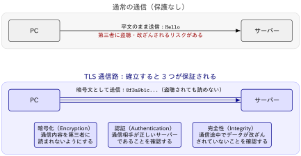
HTTPS 通信との関係
どちらも TLS を利用するが，保護する対象の範囲が異なる
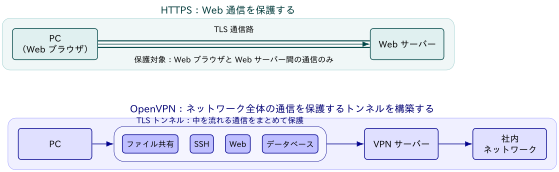
VPN ログインの ID・パスワードはディレクトリサービスで一元管理される
Without LDAP：サービスごとに個別管理
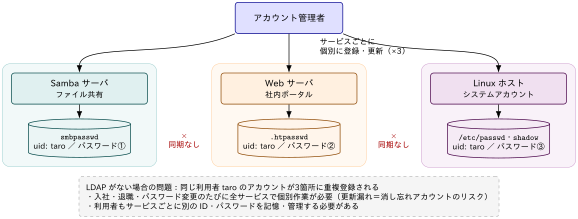
With LDAP：ディレクトリで一元管理
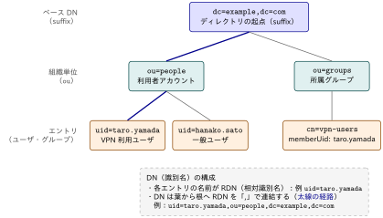
VPN 通信路を安全に確立するための証明書と共有鍵
ca.crt は，VPN サーバーの正当性を検証するための CA（認証局）証明書：公開情報のため秘匿は不要ta.key は，サーバーとクライアントだけが共有する TLS-Auth 共有鍵：秘密情報のため第三者に渡さないca.crt：VPN サーバーが本物か検証する
ta.key：不正な接続要求を TLS 開始前に遮断する
利用者が自分で作成するものではなく，接続設定一式として配布される
ca.crt は，VPN 管理者が CA（認証局）を作成して発行する公開証明書：この CA がサーバー証明書 server.crt に署名するta.key は，VPN 管理者が OpenVPN の --genkey コマンドで生成する共有鍵：同一のものをサーバーと全クライアントに配布するca.crt の発行：CA を作成し server.crt に署名する
ca.key は CA の秘密鍵として VPN 管理者のみが保持し，ca.crt は公開証明書としてクライアントへ配布するca.crt を使って，接続先のサーバー証明書がこの CA の署名によるものかを検証するca.crt・ta.key はサーバーと全クライアントに同じものを配布する
実務では Easy-RSA による一元管理が一般的
ca.crt・server.crt・client.crt の発行・更新を一元的に行うことが多いta.key は OpenVPN コマンドで一度生成し，その共有鍵を各クライアントへ配布する運用が一般的署名が一致しないパケットは TLS ハンドシェイク前に破棄される
ta.key で OpenVPN の全制御パケットに HMAC 署名を付与・照合する仕組み のことta.key を持たない相手は TLS ハンドシェイクを開始できない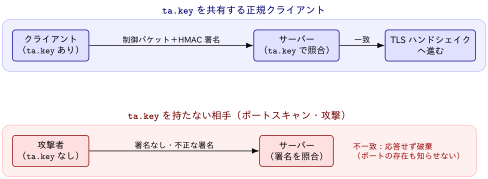
検証の流れ
ta.key を事前に共有する（環境情報の受領時に配布される）入口対策としての効果
接続設定一式と同時に配布されるが，担う役割は異なる
*.ovpn・ca.crt・ta.key）が併せて配布されるが，役割は独立している接続時に照合が行われる順序
regmonkey_index:
title_fontsize: 1.05em
bullet_fontsize: 0.86em
numbering: false
children:
- title: ① TLS-Auth 検証（ta.key）
description:
- クライアントは <code>ta.key</code> を用いて接続要求に HMAC を付与
- サーバーは同じ <code>ta.key</code> で HMAC を検証
- 一致しない接続要求は TLS ハンドシェイク前に破棄
width: [35,65]
- title: ② TLS ハンドシェイク（ca.crt）
description:
- サーバーは <code>server.crt</code> をクライアントへ送信
- クライアントは <code>ca.crt</code> により証明書の署名・有効期限を検証
- ECDHE 等でセッション鍵を生成し，共通鍵を共有
- TLS 通信路（暗号化トンネル）を確立
width: [35,65]
- title: ③ LDAP 認証
description:
- TLS 通信路上で ID・パスワードを安全に送信
- VPN サーバーは LDAP サーバーへ認証を要求し，LDAP サーバーが利用者情報を照合
- 認証成功後，仮想 IP を割り当て VPN 利用開始
width: [35,65]Regmonkey Presentation. ©Ryo Nakagami. All rights reserved.